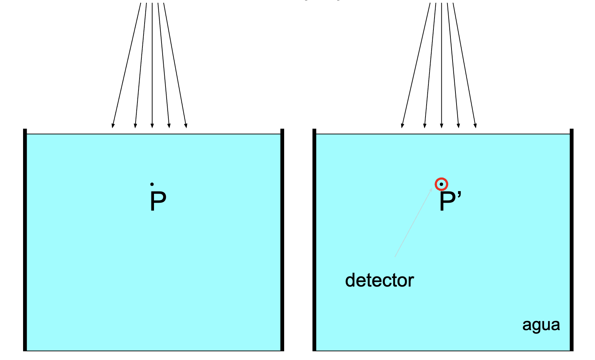
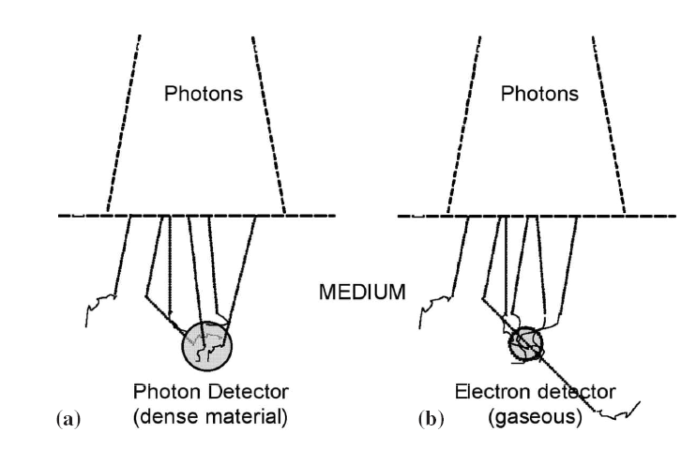

graph TD
subgraph Detector
style Detector fill:#f9f9f9,stroke:#333,stroke-width:2px;
A[Elemento sensible] --> B[Lector]
style A fill:#f9f9f9,stroke:#333,stroke-width:1px;
style B fill:#f9f9f9,stroke:#333,stroke-width:1px;
end
Detectores
Generalidades. Dosímetros absolutos. Detectores de estado sólido
Problema de la cavidad
Medida de la dosis en haces de fotones o partículas cargadas
Para medir la dosis en un punto de un medio tenemos que introducir un detector dentro de él. Pero en general la composición del detector será distinta de la del medio.
¿Qué pasa con la dosis en un punto de un medio, si sustituimos una región pequeña en torno a ese punto por otro medio distinto?

Fundamentos de detección
Relación entre la sección eficaz de interacción total atómica (magnitud microscópica) y el coeficiente de atenuación lineal másico (magnitud macroscópica) para fotones.
La radiación interacciona con los átomos independientemente del estado de agregación y molecular.
El número de átomos presentes en una unidad de volumen \(N\) será el número de moles en la unidad de volumen multiplicado, \(\frac{\rho}{A}\), \(\rho\) densidad másica, \(A\) número másico o peso atómico, por el número de Avogadro \(N_A\)
\[\begin{equation} N = N_A\, \frac{\rho}{A} \end{equation}\]
La probabilidad de interacción en la unidad de volumen \(dV = S\, dx\) o fracción del área \(S\) ocupada por la sección eficaz total \(\sigma_t\) será
\[\begin{equation} \phi = \frac{N \, \sigma_t}{S} \end{equation}\]
Multiplicando el número de fotones que inciden por unidad de área \(\Phi\) por el área eficaz total de interacción del volumen \(dV\) tendremos \(d\Phi\) número de fotones que interaccionan por unidad de recorrido \(dx\)
\[\begin{equation} d\Phi = \Phi \, N_A \, \frac{\rho}{A} \, \sigma_t \, dx \end{equation}\]
Al producto \(\mu = N_A \, \frac{\rho}{A} \, \sigma_t\) lo llamamos coeficiente de interacción lineal. \(\mu\) es proporcional a la densidad del medio. Dividiendo por la densidad obtenemos \(\mu / \rho = \frac{N_A}{A} \, \sigma_t\) y lo denominamos coeficiente de atenuación lineal másico.
La ecuación anterior nos dice también que la fluencia (y veremos, la dosis) varía de forma exponencial con la distancia bajo condiciones de haz estrecho y monocromático.
La sección eficaz total es la suma de las contribuciones fotoeléctrica, Compton, creación de pares:
\[\begin{equation} \sigma_t = \sigma_{\text{pe}} + \sigma_{\text{C}} + \sigma_{\text{pp}} \end{equation}\]
la podemos encontrar tabulada1 en función de la energía para todos los elementos y algunos compuestos.
Poder másico de frenado para partículas cargadas
Cantidad de energía que una partícula cargada pierde por unidad de longitud recorrida en un medio, dividida por la densidad del medio.
- Expresión de Bethe para protones y partículas pesadas
\[ \frac{S_{\text{col}}}{\rho} = \frac{4 \pi N_A Z^2 e^4}{m_e c^2 \beta^2} \left[ \ln \left( \frac{2 m_e c^2 \beta^2 \gamma^2 T_{\text{max}}}{I^2} \right) - \beta^2 \right] \]
- Modificación para electrones
\[ \frac{S_{\text{col}}}{\rho} = \frac{4 \pi N_A r_e^2 m_e c^2}{\beta^2} \left[ \ln \left( \frac{2 m_e c^2 \beta^2 \gamma^2 T_{\text{max}}}{I^2} \right) - 2 \beta^2 \right] \]
Relación entre dosis y fluencia energética en el medio
Para fotones, bajo condiciones de equilibrio de partículas cargadas (CPE), la dosis absorbida en el medio \(D_{\text{med}}\) se relaciona con la fluencia energética \(\Phi_{h\nu, \text{med}}\):
\[ D_{\text{med}} = \Phi_{h\nu, \text{med}} \cdot \left(\frac{\mu_{en}}{\rho}\right)_{\text{med}} \]
Para un espectro de energías de fotones:
\[ D_{\text{med}} = \int \Phi_{h\nu}(E) \cdot \frac{\mu_{en}}{\rho}(E) \, dE \]
Para partículas cargadas, bajo condiciones de equilibrio de rayos \(\delta\):
\[ D_{\text{med}} = \Phi \cdot \left( \frac{S_{\text{col}}}{\rho} \right)_{\text{med}} \]
Y para un espectro de energías:
\[ D_{\text{med}} = \int \Phi(E) \cdot \frac{S_{\text{col}}}{\rho}(E) \, dE \]
Ejemplificación del equilibrio electrónico. Modelo simplificado unidimensional
Supongamos que las partículas primarias (fotones, protones, hadrones) lanzan hacia delante (modelo unidimensional) electrones secundarios con un poder de frenado de valor constante.
Imaginemos que la energía que las partículas primarias ceden a los electrones se reparte en tres centímetros de profundidad, es decir, la energía depositada por centímetro es la tercera parte de la energía cedida por el fotón.
Hasta que la profundidad no es igual al alcance de las partículas secundarias tenemos pérdidas locales de energía.
A partir de ahí llegamos a una situación de equilibrio transitorio en la que se deposita la energía cedida por las partículas primarias en la zona de influencia fijada por el alcance de las partículas secundarias.
Necesidad del equilibrio electrónico
El equilibrio electrónico nos permite entender y relacionar de forma sencilla lo que podemos detectar, deposición de energía por partículas secundarias en el detector, con lo que queremos medir, dosis absorbida en el medio.
Ausencia de equilibrio electrónico
Sin equilibrio electrónico los detectores miden algo próximo a la dosis en la situación de medida, con la fluencia perturbada por el detector. Lo que no sabemos es, de forma analítica, relacionar esa dosis con la dosis que realmente se deposita en el medio si el detector no está presente.
Detectores fotónicos o densos
- Detectores en los que se alcanza el equilibrio electrónico en su interior.
- Tamaño superior al rango de las partículas secundarias
\[ D_{\text{det}} = \Psi_{\text{det}} \cdot \left(\frac{\mu_{en}}{\rho}\right)_{\text{det}} \]
Con \(\Psi\) fluencia energética y \(\mu_{en}/\rho\) coeficiente másico de absorción de energía.
El factor de corrección para el medio será \[ f(Q) = \frac{D_{\text{med}}}{D_{\text{det}}} = \frac{\Psi_{\text{med}}(\mu_{en}/\rho)_{\text{med}}}{\Psi_{\text{det}}(\mu_{en}/\rho)_{\text{det}}} \cong \frac{(\mu_{en}/\rho)_{\text{med}}}{(\mu_{en}/\rho)_{\text{det}}} \]
Construcción de detectores fotónicos
Los detectores se tienen que diseñar para que apenas introduzcan perturbaciones, de forma que la fluencia en el detector \(\Psi_{\text{det}}\) sea prácticamente igual a la fluencia en el medio \(\Psi_{\text{med}}\)
El cociente entre dosis en el medio y en el detector se suele expresar de forma abreviada como:
\[ f(Q) = \left( \frac{\mu_{en}}{\rho}\right)^{\text{med}}_{\text{det}} \]
Para haces polienergéticos, se considera el valor promediado sobre todo el espectro:
\[ \left(\overline{ \frac{\mu_{en}}{\rho}} \right)^{\text{med}}_{\text{det}} = \frac{\int^{E_{\text{max}}}_0 \frac{d\Psi_{\text{med}}}{dE} \cdot (\frac{\mu_{en}(E)}{\rho})_{\text{med}} \, dE } {\int^{E_{\text{max}}}_0 \frac{d\Psi_{\text{med}}}{dE} \cdot (\frac{\mu_{en}(E)}{\rho})_{\text{det}} \, dE} = \]
Dependencia con \(E\) de \(f(Q)\) para detectores fotónicos en diferentes medios
Ejemplos típicos de detectores fotónicos:
- Cámaras de ionización abiertas (detector gaseoso grande)
- Dosímetros de termoluminiscencia de LiF (detector denso)
Detectores electrónicos o gaseosos

- Detectores en los que no se alcanza el equilibrio electrónico en su interior.
- Tamaño inferior al rango de las partículas secundarias

- Las partículas secundarias generadas en el propio detector son despreciables.
- La energía en el detector la depositan partículas secundarias producidas en su exterior.
Factor de corrección para detectores gaseosos
\[ f(Q) = \frac{D_{\text{med}}}{D_{\text{gas}}} = \frac{\Phi_{\text{med}}(S_{\text{col}}/\rho)_{\text{med}}}{\Phi_{\text{gas}}(S_{\text{gas}}/\rho)_{\text{gas}}} \]
donde \(\Phi\) se refiere a la fluencia de partículas secundarias sin incluir rayos \(\delta\).
Decimos que estamos bajo condiciones de Bragg-Gary si en el detector se verifica en términos prácticos \[ \Phi_{\text{med}} \cong \Phi_{\text{gas}} \] \[ f(Q) = \frac{(S_{\text{col}}/\rho)_{\text{med}}}{(S_{\text{gas}}/\rho)_{\text{gas}}} = \left( \frac{S_{\text{col}}}{\rho}\right)^{\text{med}}_{\text{gas}} \]
Para un caso realista de un haz polienergético se toma un cociente de poderes de frenado promedio \[ \left(\overline{ \frac{S_{col}}{\rho}} \right)^{\text{med}}_{\text{det}} = \frac{\int^{E_{\text{max}}}_0 \Phi \cdot (S_{\text{col}}(E)/\rho)_{\text{med}} \, dE } {\int^{E_{\text{max}}}_0 \Phi \cdot (S_{\text{col}}(E)/\rho)_{\text{det}} \, dE } \]
Condiciones para poder considerar que una cavidad verifica Bragg-Gray
La cavidad no debe alterar la fluencia de partículas cargadas (incluida su distribución en energía) que existiría en ausencia de la cavidad.
La dosis absorbida en la cavidad es depositada en su totalidad por la partículas cargadas que la cruzan.
Equilibrio electrónico en ausencia de la cavidad
Para aplicar Bragg-Gray no es necesario que exista equilibrio electrónico en ausencia de la cavidad.
El problema en ausencia de equilibrio electrónico es que es difícil determinar (requiere simulación Montecarlo) el espectro de las partículas cargadas.
En la práctica esto se traduce en que la cavidad debe ser pequeña en comparación al rango de los electrones secundarios.
Para el caso de haces de fotones solo las cámaras de ionización llenas de gas cumplen las condiciones de Bragg-Gray.
Problema con los rayos \(\delta\)
- Las expresiones anteriores son válidas bajo rayos \(\delta\) en equilibrio.
- En esas condiciones la deposición de la fluencia de electrones secundarios se puede considerar local.
- En la práctica se observa una dependencia con el tamaño de la cavidad, por pérdida de energía a través de los rayos \(\delta\).
Aproximación de Spencer Attix
Corrección analítica consistente en definir una energía de corte \(\Delta\) por debajo de la cual la deposición se considera local y por encima de la que no es necesario incluir en la fluencia de partículas secundarias los rayos \(\delta\)
\[ f(Q) = \left(\overline{ \frac{L_\Delta}{\rho}} \right)^{\text{med}}_{\text{gas}} = \frac{\int^{E_{\text{max}}}_\Delta \Phi(E) \cdot (L_\Delta(E)/\rho)_{\text{med}} \, dE + \left[ \Phi(\Delta) \cdot (S_{\text{col}}(\Delta)/\rho)_{\text{med}} \, \Delta \right]} {\int^{E_{\text{max}}}_\Delta \Phi(E) \cdot (L_\Delta(E)/\rho)_{\text{gas}} \, dE + \left[ \Phi(\Delta) \cdot (S_{\text{col}}(\Delta)/\rho)_{\text{gas}} \, \Delta \right]} \]
Razones del poder de frenado de colisión relativos al agua
Las cámaras de ionización abiertas van llenas de aire.
Los haces de fotones clínicos que se usan en la actualidad con mayor frecuencia corresponden a potenciales de aceleración de 6 a 10 MV que suponen energías promedio del espectro de fotones de 2 a 3 MeV. Spencer-Attix supone correcciones inferiores al 1%.
Variación con la profundidad de la razón del poder de frenado de colisión agua aire
Al medir la variación en profundidad de haces clínicos con una cámara de ionización:
- Para haces de fotones la respuesta del detector no varía.
- Para haces de electrones es necesario tener en cuenta la variación de la razón de poderes de frenado.
Funcionamiento general de los detectores
El detector se compone de un elemento sensible que se altera al recibir la radiación y un elemento lector que procesa la señal producida. Efectos sobre el elemento sensible:
- Aumento de temperatura
- Producción de iones
- Inducción de reacciones químicas
- Creación de defectos en la red cristalina
- Producción de reacciones radiactivas
- Se establece una relación cuantitativa entre el parámetro que mide el efecto y la dosis absorbida: curva de calibración
- Pueden medir la dosis absorbida total (dosímetros integradores) o la tasa de dosis por unidad de tiempo.
Características generales de los dosímetros
Precisión
Grado de coincidencia entre los resultados obtenidos al realizar varias medidas de la misma cantidad.
Dos componentes:
Repetibilidad: Capacidad para repetir el resultado de una medida bajo condiciones establecidas por y para el mismo experimentador.
- No implica intervalos cortos de repetición necesariamente.
- Puede arrastrar incertidumbres sistemáticas externas grandes, como por ejemplo un certificado de calibración externo con un incertidumbre grande que no se refleja al utilizar siempre el mismo valor.
Reproducibilidad: Capacidad de un experimentador para reproducir el resultado de una medida bajo las condiciones establecidas por otro experimentador.
- La reproducibilidad es en general mayor que la repetibilidad
- Por ejemplo dos experimentadores que utilizan factores de calibración proporcionados por diferentes laboratorios incluyen en sus incertidumbres las reproducibilidades de estos laboratorios.
Exactitud
Capacidad del detector para hacer que el resultado de la medición refleje el valor real de la magnitud que se está midiendo.
Puesto que en general no se conoce el valor real solo podemos obtener una estimación de la exactitud del detector.
En la práctica es difícil distinguirla de la reproducibilidad, entendida como la hemos introducido. Una posibilidad es tomar como valor real el promedio de determinaciones realizadas por diferentes experimentadores y como exactitud de un experimentador, su diferencia respecto al valor promedio.
En ocasiones se piensa en la exactitud en términos de errores sistemáticos. Recordemos que experimentos con suficiente estadística deberían permitir identificar estas desviaciones sistemáticas y corregirlas. Por tanto esta componente de la exactitud debería ser a largo plazo igual a cero.
Sensibilidad
La sensibilidad de un detector es la capacidad del detector para responder a pequeñas cantidades de radiación.
Se define como la relación entre la señal de salida del detector y la cantidad de radiación incidente.
- Importancia:
- Detección para bajos niveles: En aplicaciones de dosimetría ambiental y protección radiológica.
- Precisión La sensibilidad afecta la precisión de las mediciones. Los detectores más sensibles tienden a ser más ruidosos.
- Rango de medida: La sensibilidad condiciona el extremo inferior del rango de medida de un detector a través del denominado nivel de detección.
Nivel de Detección
El nivel de detección de un detector es la cantidad mínima de radiación que el detector puede medir con una certeza razonable. Este nivel está determinado por la relación señal-ruido del detector.
Linealidad
Constancia del cociente entre el incremento del parámetro medido y el incremento de la dosis.
La linealidad no es imprescindible pero facilita la calibración del detector y el tratamiento de las incertidumbres.
Linealidad vs. faltas de linealidad
Dependencia energética
Variación que presenta la respuesta del detector con los cambios de energía
- En general se prefieren detectores con dependencia energética pequeña para hacerlos menos sensibles a variaciones no controlables de la energía, por ejemplo los cambios de energía que se producen con el transporte de radiación en el medio.
Dependencia con la tasa de dosis
Variación de la respuesta del detector a medida que la tasa de radiación aumenta.
Los detectores tienden a tener a efectos de saturación a medida que la tasa de dosis aumenta que suponen pérdidas de lectura.
Este efecto es especialmente importante en haces pulsados en los que la tasa sobre el detector alcanza valores muy elevados en breves periodos de tiempo y prácticamente no está expuesto a la radiación en periodos relativamente largos.
Dependencia con el tipo de radiación
La respuesta del detector depende en general del tipo de radiación.
Si la sensibilidad del detector es suficiente en general el detector nos producirá algún tipo de señal, pero solo si contamos con la calibración adecuada la señal es interpretable.
Versatilidad
Las cámaras de ionización se pueden usar para medir campos de fotones o de electrones.
- Algunos detectores por su propia naturaleza y diseño son completamente inadecuados para medir algunos tipos de radiación
Especificidad
Los detectores de neutrones, como los dosímetros de burbujas, son completamente inadecuados para la medida de campos de fotones.
Tamaño y resolución espacial
Los detectores tienen un tamaño finito y miden la dosis promediada sobre su volumen activo. Se produce una degradación espacial de la medida en zonas de alto gradiente.
La respuesta no tiene por qué ser uniforme y normalmente se caracteriza mediante un núcleo de respuesta que normalmente es algún tipo de aproximación analítica: gaussiano, parabólico
En ocasiones se puede intentar deconvolucionar la respuesta del detector para recuperar la medida no degradada.
Disposición espacial
Puntuales: Proporcionan la lectura del punto en el que se encuentran. El tamaño del punto depende de la resolución espacial del detector.
Extensos Proporcionan simultáneamente información de cómo se distribuye espacialmente la dosis. La distribución aparece muestreada por la frecuencia espacial del detector y degradada por la resolución espacial del detector.
Frecuencia espacial de muestreo: Las flechas representan los puntos en los que el detector produce una lectura. Las gaussianas los núcleos de respuesta del detector en cada uno de esos puntos. La resolución espacial establece un límite a la degradación espacial de la medida que es independiente de la frecuencia de muestreo.
Tipo de lectura
Lectura directa: El dosímetro procesa su señal y proporciona el valor de la medida durante la irradiación o inmediatamente a su finalización. Las cámaras de ionización conectadas a un electrómetro o los dosímetros de burbujas para campos de neutrones son ejemplos de este tipo.
Lectura diferida: El dosímetro acumula durante la irradiación algún tipo de perturbación que se mantiene en el tiempo. Mediante un proceso de lectura posterior se extrae la información que se relaciona con la dosis recibida. Como ejemplos podemos dar los dosímetros por termoluminiscencia o las películas radiocrómicas.
Otras características
Fragilidad
Puede afectar tanto a las condiciones de medida, transporte y almacenamiento.
Facilidad de manipulación
Alguno detectores presentan dependencias de orientación y con las condiciones ambientales que complican su uso e interpretación.
Detectores empleados para la medida de la dosis
Dosímetros absolutos
Detectores que metrológicamente corresponden a la definición de la magnitud dosis absoluta, es decir, permiten determinar de forma directa la cantidad de energía que se absorbe y la masa en la que la energía se absorbe.
Detectores Calorimétricos
- Los más directos: Medida de la energía depositada en forma de calor.
- Exigen medir pequeñas diferencias de temperatura:
- 1 Gy = 0.2 cal/kg ⇒ Δt = 2×10⁻⁴ ºC en agua.
Tipos
- Calorímetros de agua
- Detectores de grafito calibrados mediante calentamiento óhmico
Uso
- Utilizados como patrón primario en los laboratorios nacionales de calibración.
Dosímetros Químicos
Basados en reacciones químicas inducidas por la radiación
Dosímetros basados en la reacción de Fricke
- Reacción de reducción: Fe²⁺ → Fe³⁺
- Disoluciones en agua para patrones de calibración primaria
- Disoluciones en gel para medir distribuciones espaciales tridimensionales de dosis.
Lectura
- Absorción óptica del Fe³⁺ en 304 nm para medidas en agua
- Lectura mediante equipos de resonancia magnética para medidas de distribuciones espaciales tridimensionales en gel
- Resolución espacial: Limitada por la difusión de los iones de Fe³⁺ tras la irradiación

Dosímetros basados en reacciones de polimerización
- Reacción química: Polimerización de la Acrilamida a Poliacrilamida.
- Preparación de disoluciones en gel para la medida de distribuciones espaciales tridimensionales.
- La lectura se puede realizar mediante resonancia magnética, CT, tomografía óptica o ultrasonidos.
- Es necesario tener controlados los posibles cambios químicos en la matriz de gel.
Seguridad de la acrilamida
La acrilamida es una sustancia química tóxica y potencialmente cancerígena. Puede ser peligrosa si se inhala, se ingiere o se absorbe a través de la piel. Es importante manejarla con precaución y utilizar equipos de protección personal adecuados.
Hay empresas que ofrecen servicios para externalizar este tipo de dosimetría de alta especialización
Dosímetros:
- Gel
- Película radiocrómica
Proceso de QA mediante RTSafe
Dosímetros de estado sólido
Diodos
- Elemento sensible formado por la unión de dos zonas de Si dopadas respectivamente con dopantes tipo p y tipo n.
- Por difusión los electrones de la región n (donde hay un exceso de electrones) se recombinan con los huecos de la región p (donde hay un exceso de huecos) cerca de la unión, creando una región libre de portadores de carga y con un campo eléctrico creado por el transporte de carga.
- Esta zona, denominada zona de depleción, crece hasta que el campo eléctrico compensa la difusión. Se puede aplicar un voltaje de polarización (inversa) para aumentar el tamaño de la zona de depleción
- La radiación genera pares electrón-hueco en la zona de depleción
- Por efecto del campo eléctrico los electrones y los huecos se mueven en direcciones distintas y producen una corriente eléctrica medible mediante un amplificador.
- Los diodos son capaces de medir en ausencia de polarización.
- Tienen alta resolución espacial, son robustos pero su respuesta cambia con el tiempo por lo que se suelen dedicar a medidas relativas.
Montaje experimental para realizar medidas relativas mediante diodos en cuba de agua con ejes motorizados
Detectores MOSFET
Transistor MOSFET
Metal-Oxide-Semiconductor Field Effect Transistor
- Basados en el cambio del voltaje umbral del transistor debido a la acumulación de cargas en la región de transición.
- Robustos, pequeños (buena resolución espacial), poca dependencia con la energía, la orientación o la tasa de dosis.
- La respuesta depende del tiempo transcurrido desde la irradiación.
- Sólo miden dosis integrada; no permiten medir tasa de dosis.
- Requieren un lector para medir la señal, que suministra el voltaje de polarización y mide el voltaje umbral.
- Se emplean sobre todo para dosimetría in vivo.
- Pueden ser medidos a distancia con antenas de radiofrecuencia (dosímetros internos implantables)
Detectores de diamante
- Basados en el cambio de resistencia de una pieza de diamante debido a la radiación.
- La respuesta no depende de la energía, la orientación o la temperatura.
- Tamaño muy pequeño (algunos mm\({}^3\)), muy útiles para la medida de dosis en zonas de alto gradiente.
- No pierden señal con la dosis acumulada.
- Composición equivalente a tejido.
- Exigen una irradiación previa para eliminar efectos de polarización.
- Por sus características son los detectores ideales para medidas relativas puntuales.

Detectores. Generalidades. Dosímetros absolutos. Estado sólido. Física de la radioterapia